You may return to an MCP server to edit any of these settings. However, be aware that editing an MCP server's Name causes a corresponding update to the URL, and you must update it for any MCP clients to continue to access the MCP server.
After completing this lesson, you'll be able to:
In this lesson, you will:
FME Flow can act as an MCP server by exposing FME workspaces as callable tools. Creating tools for your workspaces allows any MCP-compatible client, like an AI model or other application, to run the workflow without needing to understand how you built the workspace, the systems it connects to, or the data formats it uses. The MCP client simply connects to the MCP server, discovers available tools, then calls them by providing inputs. The MCP server processes the request, runs the tool, and returns a structured output response to the client.
The MCP tools that run in FME Flow perform the same operations as any other workspace, including reading, writing, updating, or deleting data. They also inherit FME Flow's deployment options and security model, allowing governed control over your workflows and data. For example, an organization may run FME Flow on-premises or in a private cloud, allowing MCP clients to work only with governed data while it remains inside controlled infrastructure.
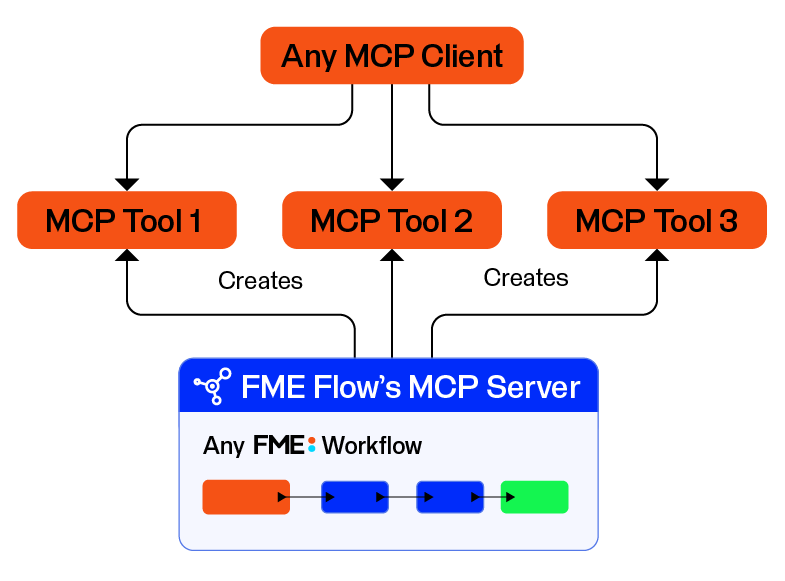
FME Flow can host multiple MCP servers from a single FME Flow instance. When you publish a workspace as an MCP tool, any MCP client can discover it and call it; then FME Flow executes the workspace and returns the relevant output. AI systems only see and access the tool, its description, and its inputs, without directly accessing all your data. FME Flow logs each tool call as a job, giving you a full audit trail of what it called, when, and what it returned.
If you already have hundreds of FME workflows and are already familiar with AI, you might be wondering: Why would I create an MCP server on FME Flow? Here are some reasons you may want to leverage MCP for new and existing workflows using FME:
The MCP Servers page on FME Flow lists all the current MCP servers, including their status, which indicates if the server is running and accessible to MCP clients. The Create option opens a form where you enter details for your new MCP server, including its name, which propagates to the URL, title, and description. You may also set a job queue to run the MCP workspaces and configure its security settings.
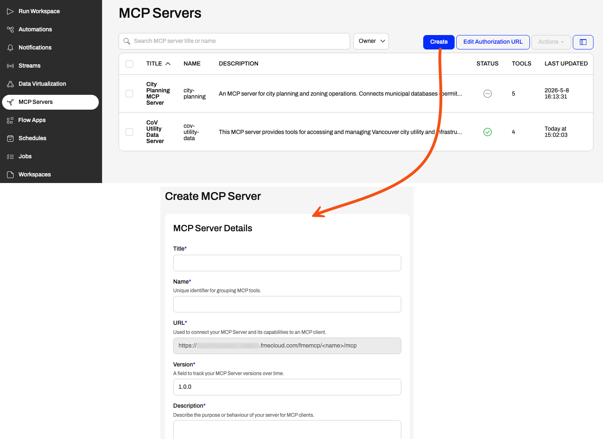
You may return to an MCP server to edit any of these settings. However, be aware that editing an MCP server's Name causes a corresponding update to the URL, and you must update it for any MCP clients to continue to access the MCP server.
Once you create your MCP server, FME Flow takes you to the Server Details tab. The URL is what you will give to the MCP client that connects to the server; however, clients can only connect successfully once you've started the MCP server.
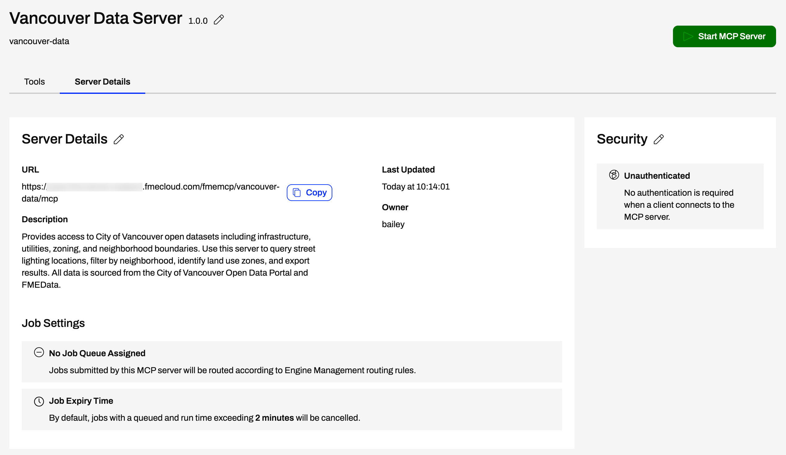
Therefore, in order to make your MCP server discoverable to MCP clients, you need to start it. Once you start it, MCP clients will be able to successfully connect to and access your MCP server. Likewise, stopping an MCP server makes it unavailable to clients.
After you create your MCP server, the next step is to add tools for MCP clients to query and call to run. An MCP tool carries out a specific operation: running a workspace in the context of FME. Any workspace on FME Flow can be an MCP tool, allowing your existing workflows to become MCP tools, or you may build workspaces specifically for use with MCP.
Currently, only MCP Tools are supported, not MCP Prompts or Resources, on FME Flow MCP Servers.
You create and edit your MCP tools from the Tools tab, where FME Flow lists all your published and unpublished tools.
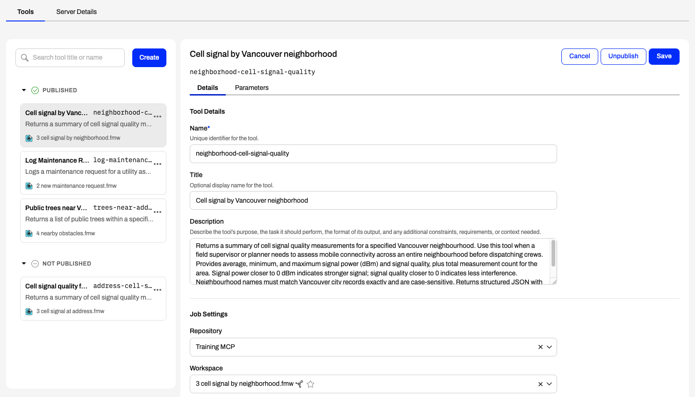
Unpublished tools are not available to MCP clients, and you may only publish tools that have a workspace assigned to them. If you change or republish a tool's workspace, the tool automatically becomes unpublished, and you must review it before publishing it again.
When you create a tool, you first need to give it a name, title, and description on the Details tab. MCP clients and AI models will use the description to determine whether the tool is appropriate for the task they need, so make sure to provide a clear description that includes its purpose, inputs, outputs, and any other contextual information. Next, you will need to select a workspace to run as part of the tool.
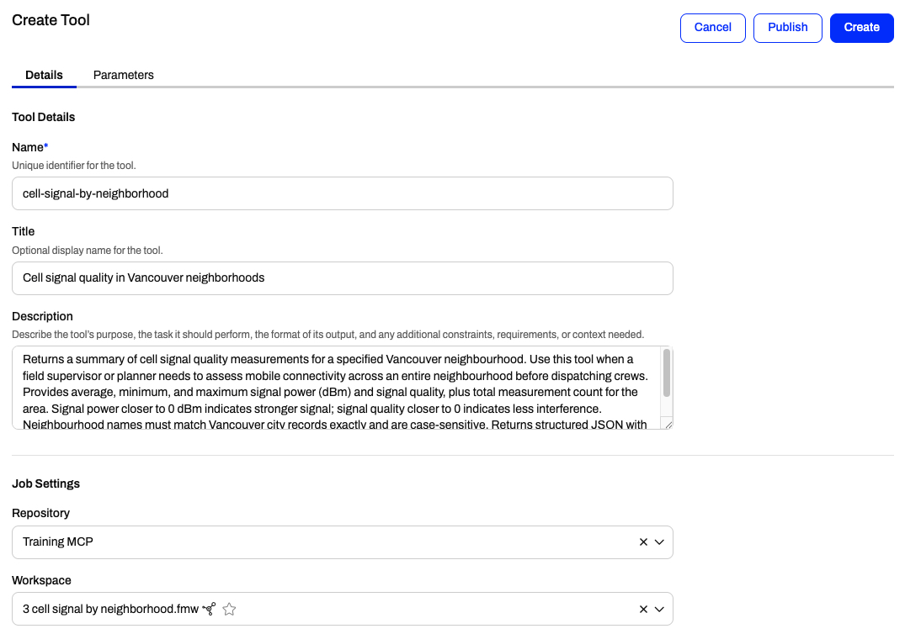
The remaining settings on this page allow you to alter specific job queue and expiry times for this tool.
You might notice that some workspaces have this icon next to them - it symbolizes a workspace that contains an MCP writer. Adding an MCP writer to your workspace allows the tool to return content to the MCP client. Without an MCP writer, FME Flow's MCP server only returns job status information. We will explore adding an MCP writer to a workspace in the next lesson.
Before finalizing your tool, you also need to provide descriptions for any workspace user parameters in the Parameters tab. User parameters in your workspace become tool parameters that take input to control how the MCP tool runs, exactly the same way user parameters take input from end-users to workspaces.
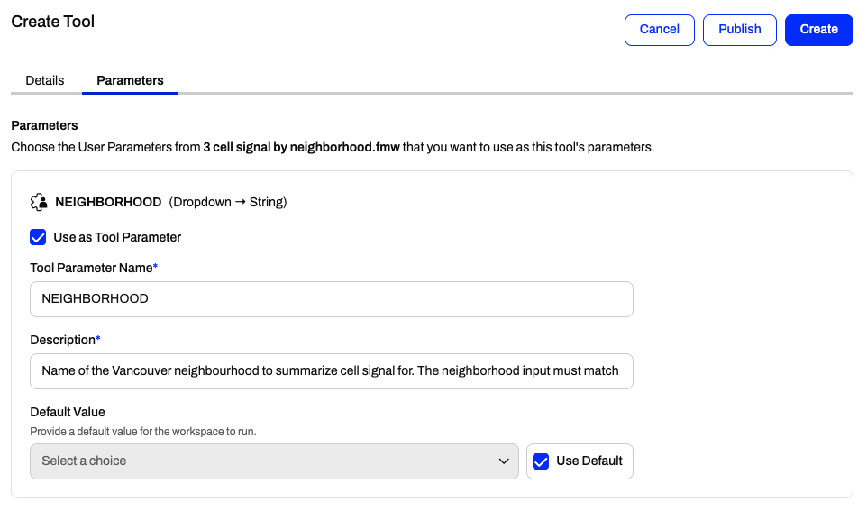
Again, each user parameter description explains how an MCP client or AI model determines what information to provide to the MCP server when making the tool call.
Tool descriptions, names, and parameter descriptions determine how MCP clients discover and understand what a tool does. These descriptions need to be clear and concise for the MCP client, usually an AI model, to understand what the tool does and what information it needs to provide to run successfully. Here are some tips:
Tool names
count_streetlight_poles_by_area is more descriptive than get_polesTool descriptions
Parameter descriptions
Using AI to write your MCP names and descriptions is one of the easiest ways to ensure they're clear for another AI to understand. You can describe what the workflow is, describe the inputs and outputs, provide any restrictions, and tell AI that you need to write the description for MCP, and it will write it for you to copy. You should always double-check AI's work to make sure it's accurate too.
MCP Servers on FME Flow currently support OAuth 2.0 authentication. To use OAuth 2.0 authentication, your FME Flow security must have SAML enabled and configured with your SAML identity provider's roles and users. You may set an MCP server's security when you create it, or from the Server Details page for an existing MCP server.
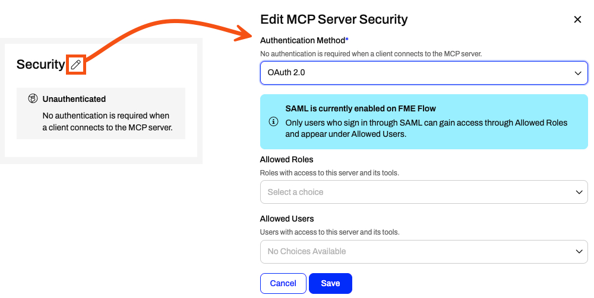
You must also create an authorization URL for all authenticated MCP Servers through the Edit Authorization URL option. If you don't create the URL, a warning banner will display on the MCP Servers page and on the Server Details page for the MCP Server requiring authentication.
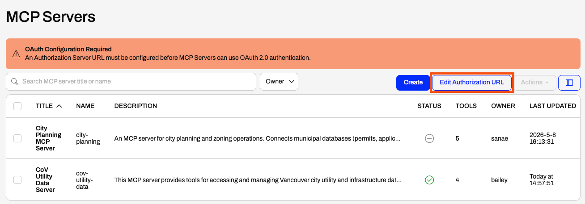
To use OAuth 2.0 authentication with MCP Servers, you need to configure FME Flow with SAML authenitcation. For more information, see our article Configuring FME Flow for SAML Authentication.
Once you build and start your server and add and publish some tools, you're ready to use MCP clients to connect to your MCP server. Oftentimes, the MCP client is an AI that will read and call tools from your MCP server; however, the MCP client could be another application, or even an FME workspace using the MCPCaller. The URL under the Server Details tab is the URL that MCP clients will use to connect to your server. For most clients, you'll need to open its MCP connector settings, paste the URL into the appropriate location, provide any other specific configurations, and then you'll be able to use the client to call your MCP server on FME Flow and receive structured, consistent data back.
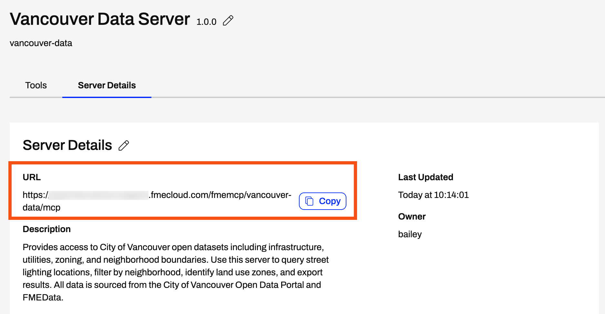
Once you connect your MCP client to your MCP server, you're ready to make calls to tools on the MCP server, running workspaces behind the scenes to process your data. Once the tool executes, FME returns a response to the client indicating its success and any data you choose to expose with an MCP writer.
With MCP on FME Flow, AI never gets direct access to your data. Instead, AI only has the ability to call the workspace tool and process the results you choose to return from the FME workspace. FME is the guarding layer that sits between AI and your data, controlling what AI can and cannot access, regardless of whether your data is in the cloud, on-premises, or a hybrid.
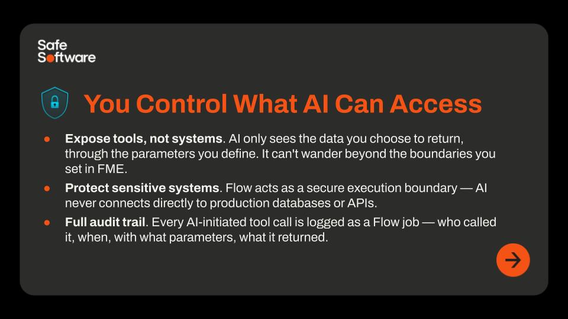

Frank has already built his first workspace to deploy as an MCP tool on an FME Flow MCP server. The workspace is quite simple; it takes user input for maintenance requests and logs the request to an Excel file in FME Flow Resources. Other workflows or automations can be triggered to run based on an update to the file, or the file can be used as source data. To get his MCP tool running, Frank needs to create and deploy an MCP server on FME Flow, then add his workspace as a tool and provide clear descriptions so an AI model may correctly call the tool from user input. Lastly, Frank wants to use an AI model in LM Studio as an MCP client to call his MCP tool. By using an AI model to process the user request, the user can input a string of text for the request, and the AI will assign the appropriate values to the input parameters for the MCP tool to run.
In this exercise, you will:
How you log into FME Flow will depend on the FME Flow instance you are using.
If you are taking a Safe Software-hosted training course, you can access FME Flow at http://localhost/fmeserver.
- Username: admin
- Password: FMElearnings
If you are not taking a Safe Software-hosted course, have just installed your FME Flow, and haven’t logged in yet, you must use the default username/password, admin/admin. After entering the default username/password, FME Flow will prompt you to create a new password for the admin user account. Then log in using the username admin and your new password. Because this is a fresh install, you must also license FME Flow before continuing; see the FME Flow Licensing Walk-Through for instructions.
If you are using FME Flow Hosted, see these instructions.
To host Frank's MCP tool, you first need to create a new MCP server.
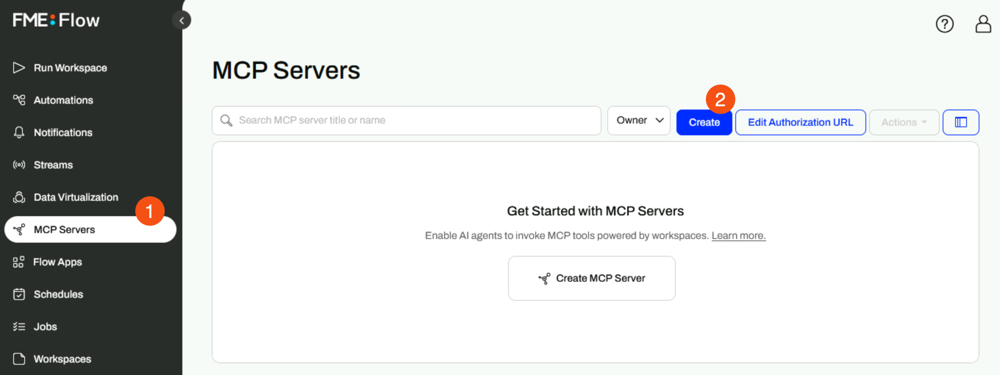
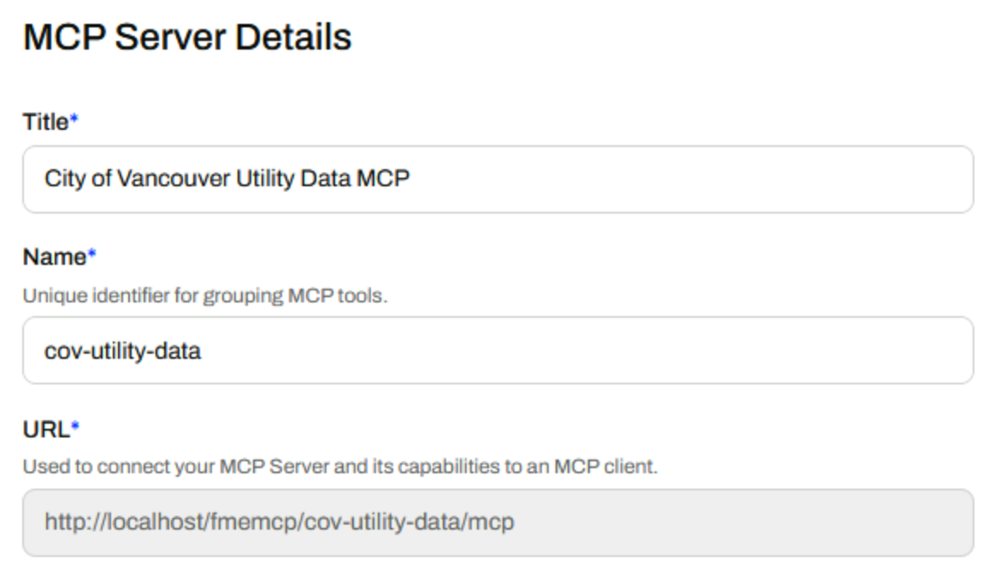
This MCP server provides tools for accessing and managing Vancouver city utility and infrastructure data. It supports field operations, maintenance logging, and spatial data retrieval for municipal assets, including water, drainage, electrical, and street infrastructure. Use this server to log maintenance requests, retrieve asset records, filter and summarize city datasets, and export data for analysis. All data is sourced from the City of Vancouver open data and FME training datasets. Tools should be called in sequence where appropriate — for example, retrieve asset records before filtering or exporting them.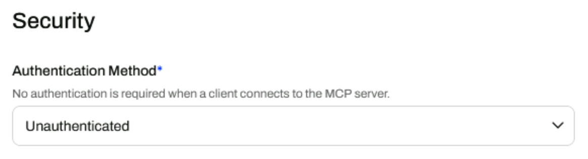
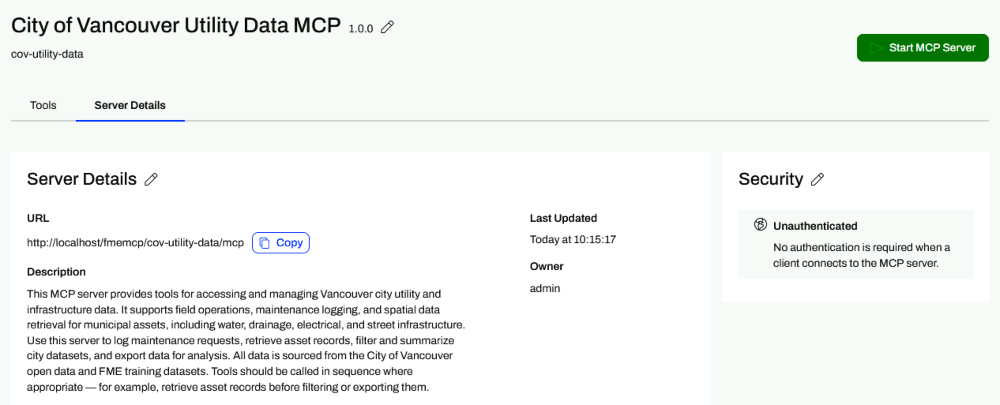
Frank has already published the workspace to use as an MCP tool to FME Flow. The workspace is quite simple; it uses an AttributeManager to transfer inputs as user parameters to attributes, then writes the data to an Excel file in Resources with the maintenance request information.
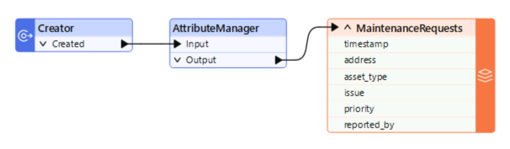
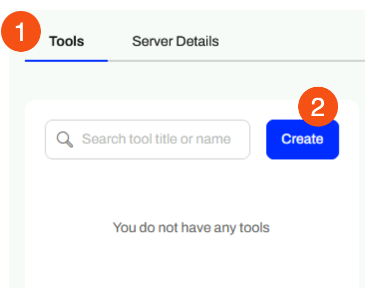
Logs a maintenance request for a utility asset at a residential address in Vancouver. Call this when a field worker reports an issue at a specific address. Asset types include water meter, gas meter, power line, sewer connection, street light, water main, fire hydrant, and storm drain. No data is returned — the request is recorded in the MaintenanceRequests.xlsx file in Resources.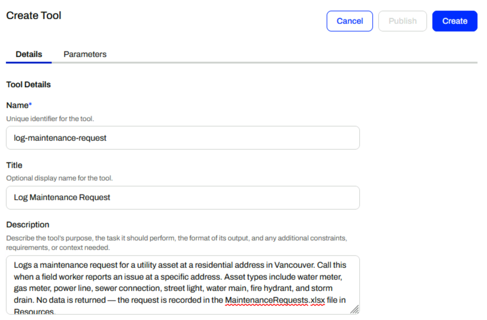
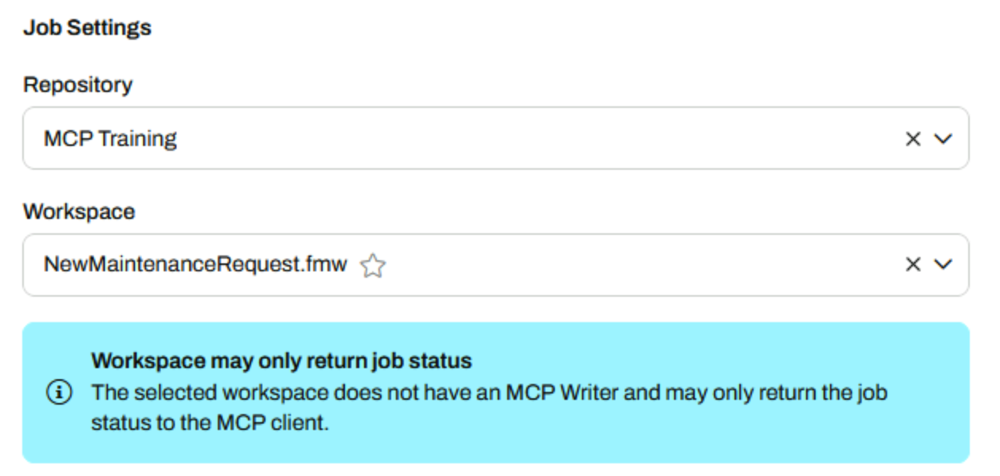
This workspace takes input about each maintenance request through parameters, and you will need to provide adequate descriptions for each parameter so the AI model knows what values to supply from the user request.
| Parameter | Description | Default Value |
| ADDRESS | The address where the issue is occurring and maintenance is to take place | 123 Main St |
| ASSET_TYPE | The infrastructure asset that is affected. Asset types include water meter, gas meter, power line, sewer connection, street light, water main, fire hydrant, storm drain, and other. | Water Meter |
| ISSUE | Description of the issue occurring | Leaking water |
| PRIORITY | Priority ranking for the issue | High |
| REPORTED_BY | Name of whoever is reporting the issue | <Enter your name> |
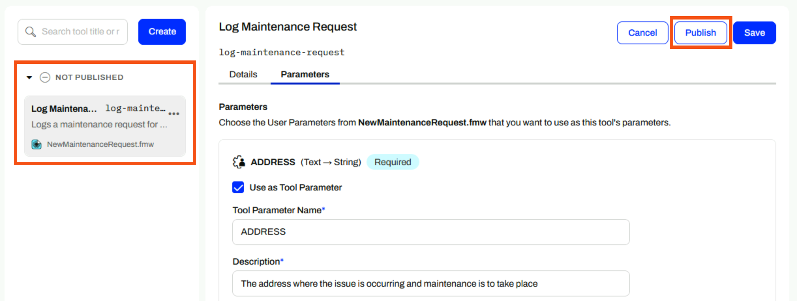
Now, your tool will be available to any MCP client that connects to your MCP server.
For your MCP server and its tools to become available to MCP clients, you also need to start the server.
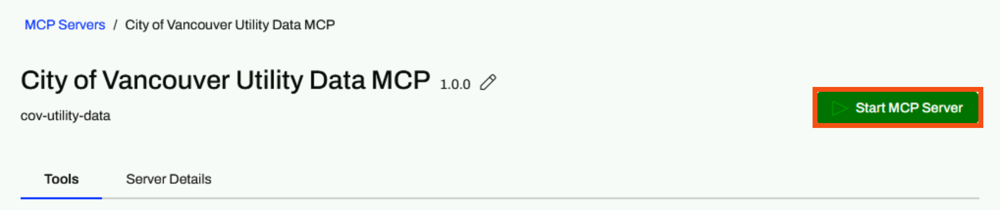
For this exercise, you will use LM Studio to connect to your MCP server and call your MCP tools.
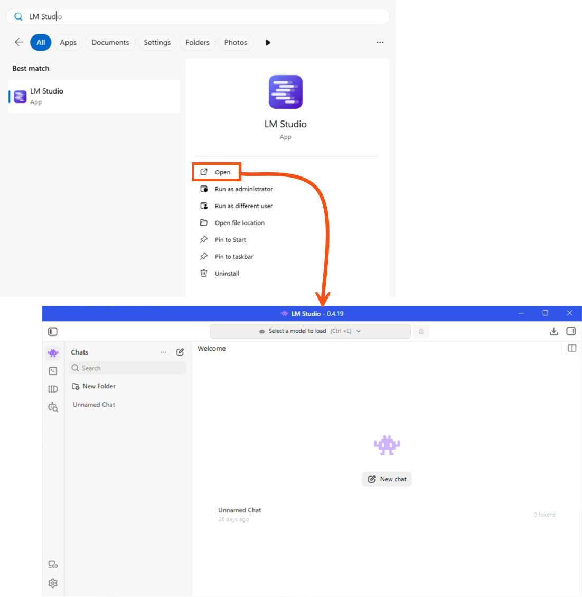
We've already configured LM Studio to connect to your FME Flow MCP Server, as long as your MCP server URL is http://localhost/fmemcp/cov-utility-data/mcp.
If you're interested in how we configured LM Studio to connect to this MCP server, expand the section below for the steps we completed.
Regardless of your MCP client, you will need to copy the URL from the Server Details tab.
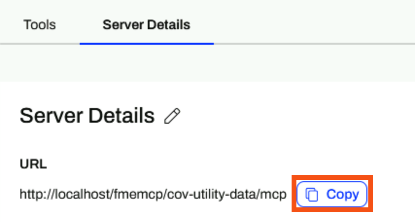
{
"mcpServers": {
"cov-utility-data": {
"url": "http://localhost/fmemcp/cov-utility-data/mcp"
}
}
}To check or edit the mcp.json file, go to the Developer tab on the left side menu and then select mcp.json.
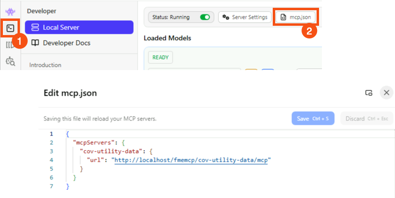
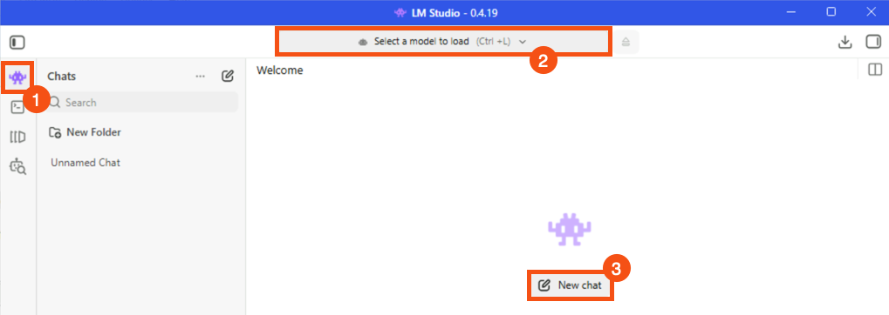
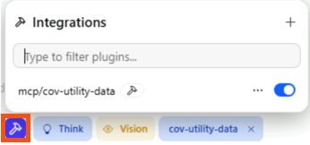
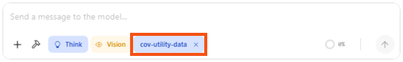
Log a maintenance request for 78 Violet Street. The fire hydrant in the boulevard is leaking water. This is reported by <Enter your name> and severity is medium.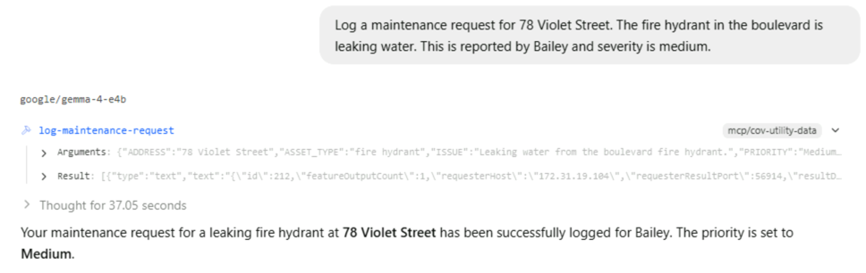
Each time you call an MCP tool, the tool runs a workspace, which is traceable as a normal FME Flow job.
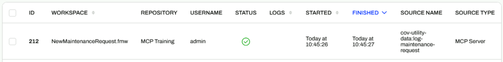
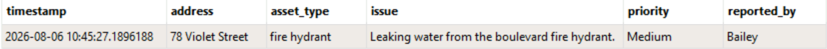
You've now created an MCP server hosted on FME Flow, added an MCP tool that logs a maintenance request, and used an MCP client to run your new MCP tool. Frank's next steps will be to add more tools and make the MCP server more capable and versatile.